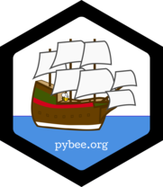

Transpiler free Python
Artem Malyshev
@proofit404
Opal
Transpiler with semantic
Transpiler with semantic
class User
def admin?
@name == 'Admin'
end
end
(function(Opal) {
var self = Opal.top, $scope = Opal, $klass = Opal.klass;
Opal.add_stubs(['$==']);
return (function($base, $super) {
function $User(){};
var self = $User = $klass($base, $super, 'User', $User);
var def = self.$$proto, $scope = self.$$scope, TMP_1;
def.name = nil;
return (Opal.defn(self, '$admin?', TMP_1 = function() {
var self = this;
return self.name['$==']("Admin");
}, TMP_1.$$arity = 0), nil) && 'admin?'
})($scope.base, null)
})(Opal);
Batavia
Full runtime implementation
VM principles
- Just a bytecode interpretter
- Marshal library implementation
- Code object constructor
- Minimal footprint
Source code
foo(1, 2)
Opcode
12 LOAD_NAME 0 (foo)
15 LOAD_CONST 2 (1)
18 LOAD_CONST 3 (2)
21 CALL_FUNCTION 2 (2 positional, 0 keyword)
24 POP_TOP
Bytecode
7079 da03 6f01 0073 0200 x.py..foo....s..
0001 7205 00e9 0000 e902 ....r...........
004e 2901 0000 0100 0000 ...N).r....r....
0000 0072 0000 0000 00da r....r....r.....
6d6f 6475 3e01 0073 0200 .....s..
Vue.js
<div id="app">
{{ message }}
</div>
var app = new Vue({
el: '#app',
data: {message: 'Hello Vue!'}
})
Python VM in the browser
import dom
Vue = dom.window.self.Vue
class options:
el = '#app'
class data:
message = 'Hello Vue!'
app = Vue(options)
index.py
python -m py_compile index.py
# -> index.pyc
index.html
<script src="batavia.js"></script>
<script id="batavia-index">
Fg0NCnw5dVi7AAAA4wA...
</script>
<script type="text/javascript">
window.vm = new batavia.VirtualMachine({});
window.vm.run('index', []);
</script>
I'm going to build my own React
with Python and Codecs
# coding: pyxl
import dom
from pyxl import html
div = dom.document.getElementById('fill-me')
div.innerHTML = <h1>Hello World!</h1>
index.html
<script src="batavia.js"></script>
<!-- Bandled PyXL library -->
<script id="batavia-pyxl">
Fg0NCgELfFgWAAAA4w...
</script>
<script id="batavia-pyxl.html">
Fg0NCtRLfFh6AAAA4w...
</script>
<!-- Our index.py -->
<script id="batavia-index">
Fg0NCj8SfFiEAAAA4w...
</script>
Replacing python import system with webpack
Because why not?
window.vm = new batavia.VirtualMachine({
loader: function(name) {
var stdlibModule = batavia.stdlib[name];
return {
'bytecode': stdlibModule,
'filename': new batavia.types.Str("<input>")
};
}
});
window.vm.run('index', []);
Pure python implementation of the standard library
module.exports = 'Fg0NCuBMo1brAwAA4wAAAAAAAAA...'